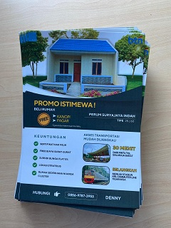

Selamat Datang di Portofolio Saya
Saya adalah lulusan sarjana Teknik Informatika yang berpengalaman sebagai staff administrasi dan mahir menggunakan MS Office. Saya menyukai pekerjaan administratif, bekerja dengan manajemen waktu yang baik dan lebih menekankan pada prioritas. Saya fleksibel, dapat bekerja secara mandiri maupun tim, pekerja keras, dapat dipercaya dan cepat dalam mempelajari sesuatu.
Profil Saya

| Nama | : Zaenal Atok |
| Tanggal Lahir | : Wonosobo, 21 November 1995 |
| Pendidikan | : S1-Informatika |
| Perguruan Tinggi | : Universitas Indraprasta PGRI |
| Ketertarikan | : IT, Administratif, Seni Kreatif |
Soft Skill & Hard Skill
-
Soft Skill
Detail, Komunikasi Efektif, Manajemen Waktu, Pemecahan Masalah
Hard SkillAdministratif, MS Excel, Penggunaan Peralatan Kantor, IT, Adobe Premiere Pro, Capcut, Canva, FL Studio
Pengalaman Kerja
- PT. Keraton Agung Sejahtera - Staff Admin | Feb 2024 - Nov 2024
1. Memantau progres pemesanan dan kelengkapan berkas konsumen, lalu laporkan ke manajemen setiap minggu
2. Melengkapi legalitas unit milik perusahaan
3. Follow up berkas konsumen dari tahap pemesanan hingga persiapan akad dengan pihak marketing
4. Menangani persyaratan perjanjian kredit dengan marketing dan notaris
5. Menginput data konsumen/kelengkapannya untuk keperluan proses pengajuan KPR
6. Membuat dan mendesign flyer/poster dan meningngkatkan penjualan hingga 10%
7. Membuat program sederhana menggunakan Excel untuk memantau progres booking konsumen
8. Mengelola dokumen hingga mengarsipkannya baik secara fisik maupun digital
- SMK Yadika 3 Jakarta - Staff Admin | Sep 2015 - Des 2023
1. Bertanggungjawab mengelola email sekolah, aplikasi atau website yang berhubungan dengan pendidikan
2. Menginput data guru dan siswa menggunakan Microsoft Excel
3. Meningkatkan akurasi rekap absensi guru dengan mengimplementasikan sistem excel otomatis
4. Bertanggungjawab dalam mengelola persuratan baik surat masuk maupun surat keluar
5. Mengelola dan mengarsipkan dokumen kantor supaya lebih rapi dan terorganisir
6. Menerima telepon masuk dan meneruskan ke bagian terkait
7. Membuat laporan bulanan secara berkala
Proyek dan Pencapaian
-
PT. Keraton Agung Sejahtera
- Membuat Sistem untuk memantau progres booking konsumen menggunakan excel
Saya Membuat Sistem dari Microsoft Excel untuk memantau progres booking konsumen hingga akad. Sebelumnya pernah berfikir ingin membuat sistem tersebut berbasis web. Namun, sepertinya akan memakan banyak waktu mulai dari proses coding, testing hingga deploy. Akhirnya saya memutuskan untuk memakai software Microsoft Excel saja. Saya menggunakan nama perumahan sebagai ID lalu data entitas lain yang melekat saya gunakan rumus VLOOKUP. Saya membuat 4 progres yaitu: Progres Pemberkasan, Progres BTN, Progres Akad, dan Sold Out. Setiap perubahan yang diinput di database akan masuk ke tabel progres mulai dari progres pemberkasan sampai sold out. Saya menggunakan rumus Excel IF, INDEX, dan MATCH untuk mengisi kolom setiap progres. Selain itu saya juga membuat sheet lainnya untuk menunjang kebutuhan saya di antaranya: Progres Booking, Kelengkapan Berkas, dan Daftar Sold Out. Semua sheet saling terhubung dengan database utama sehingga semua sheet akan terisi otomatis sesuai apa yang diinput di database.
- Mendesign Brosur untuk promosi
Meskipun profesi saya selama ini adalah sebagai staff admin, namun saya merupakan seorang kreatif dalam membuat sesuatu. Di sini saya membantu menyelesaikan masalah perusahaan dengan skill desain saya, walaupun belum di level expert.
- Penerapan Rumus-rumus MS Excel Pada Pengolahan Data Siswa
Sebelumnya pendataan siswa masih mengandalkan input manual pada MS Excel yang pastinya akan memakan banyak waktu. Misalnya pada saat penyetoran bantuan KJP ke SPP sekolah, staff harus menginput nomor Briva dan nominal tunggakan siswa satu persatu. Lalu saya membuat rumus formula MS Excel menggunakan rumus VLOOKUP dengan nomor NIS sebagai ID-nya. Hasilnya proses pendataan tersebut menjadi lebih cepat dan efisien.
- Pengarsipan Dokumen dengan 2 Metode
Dokumen-dokumen penting memang seharusnya disimpan dengan rapi dan aman. Maka dari itu sebaiknya disimpan dalam bentuk soft copy dan hard copy. Kelebihan dari soft copy adalah dokumen lebih cepat dicari dan didistribusikan melalui media elektronik, kekurangannya data bisa saja hilang/file corrupt. Kelebihan Hard Copy adalah dokumen lebih terjamin keasliannya/valid/resmi, sedangkan kekurangannya dokumen tersebut rentan terhadap kerusakan seperti terkena air, serangga ataupun rusak karena termakan usia. Maka dari itu saya selalu menyimpan dokumen tersebut ke dalam penyimpanan yang paling aman. Untuk Soft Copy saya simpan di hard drive komputer dan penyimpanan cloud, lalu untuk hard copy saya susun dalam folder maupun lemari besi/logam agar terhindar dari rayap.
- Membuat Aplikasi/Website
Tepatnya pada bulan Januari-Mei sekolah rutin melakukan promosi dan penerimaan siswa baru, namun pada tahun 2020 terjadi wabah COVID-19 yang tidak memungkinkan orang-orang berkumpul dalam suatu tempat. Lalu saya berinisiatif membuat aplikasi PPDB berbasis web agar siswa yang hendak mendaftar tidak perlu lagi datang ke tempat, hanya dengan mengisi formulir secara online. Selain itu, aplikasi ini juga membantu dalam memonitor dan menganalisa data siswa baru yang mendaftar melalui website. Meskipun tampilan dan fitur pada website belum secanggih website lainnya, namun ini adalah sebuah langkah untuk meningkatkan efektivitas dan efisiensi sistem pendaftaran siswa baru.
- Sertifikat Pelatihan Microsoft Excel 365

Pelatihan ini memberikan keterampilan menggunakan berbagai fitur dan rumus Microsoft Excel untuk meningkatkan efisiensi dan efektivitas pekerjaan administratif.
- Sertifikat Microsoft Excel Untuk Administrasi Perkantoran

Pelatihan ini mengajarkan cara menggunakan rumus excel yang familiar dengan pekerjaan administrasi perkantoran.
- Sertifikat Canva

Pelatihan ini memberikan keterampilan dalam mendesign suatu gambar dan memaksimalkan penggunaan tools yang sudah tersedia di Canva.
- Sertifikat Digital Marketing

Pelatihan ini mengajarkan digital marketing mulai dari dasar sampai tahap implementasi. Dalam pelatihan ini juga diberikan tutorial secara terperinci seperti membuat iklan di google ads, youtube ads dan platform sosial media yang lainnya.
Kontak
Untuk informasi lebih lanjut, silakan hubungi saya melalui:
- Email: zaenalatok41@gmail.com
- Telepon: 0878 8041 2340
- LinkedIn: linkedin.com/in/zaenal-atok
- Sertifikat Microsoft Excel Untuk Administrasi Perkantoran

Gambar: Sistem progres booking menggunakan MS Excel
Gambar: Brosur untuk promosi

Gambar: Sistem Informasi Pendaftaran Siswa